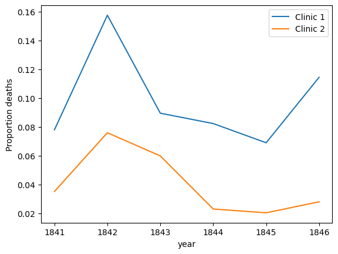
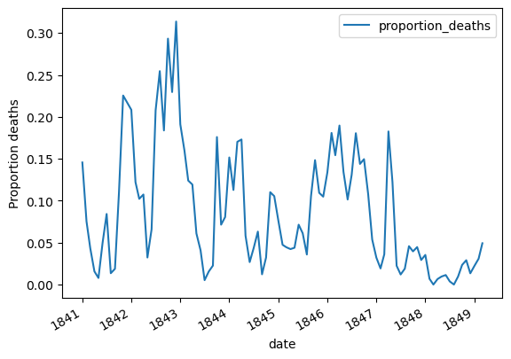
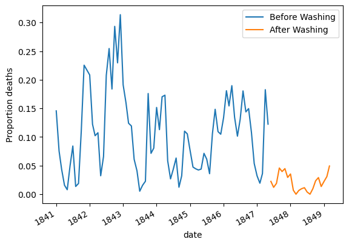

This is Dr. Ignaz Semmelweis, a Hungarian physician born in 1818 and active at the Vienna General Hospital. If Dr. Semmelweis looks troubled it’s probably because he’s thinking about childbed fever: A deadly disease affecting women that just have given birth. He is thinking about it because in the early 1840s at the Vienna General Hospital as many as 10% of the women giving birth die from it. He is thinking about it because he knows the cause of childbed fever: It’s the contaminated hands of the doctors delivering the babies. And they won’t listen to him and wash their hands!
In this notebook, we’re going to reanalyze the data that made Semmelweis discover the importance of handwashing. Let’s start by looking at the data that made Semmelweis realize that something was wrong with the procedures at Vienna General Hospital.
# Importing modulesimport pandas as pd# Read datasets/yearly_deaths_by_clinic.csv into yearlyyearly = pd.read_csv('datasets/yearly_deaths_by_clinic.csv')# Print out yearlyyearly
year
births
deaths
clinic
0
1841
3036
237
clinic 1
1
1842
3287
518
clinic 1
2
1843
3060
274
clinic 1
3
1844
3157
260
clinic 1
4
1845
3492
241
clinic 1
5
1846
4010
459
clinic 1
6
1841
2442
86
clinic 2
7
1842
2659
202
clinic 2
8
1843
2739
164
clinic 2
9
1844
2956
68
clinic 2
10
1845
3241
66
clinic 2
11
1846
3754
105
clinic 2
2. The alarming number of deaths
The table above shows the number of women giving birth at the two clinics at the Vienna General Hospital for the years 1841 to 1846. You’ll notice that giving birth was very dangerous; an alarming number of women died as the result of childbirth, most of them from childbed fever.
We see this more clearly if we look at the proportion of deaths out of the number of women giving birth. Let’s zoom in on the proportion of deaths at Clinic 1.
# Calculate proportion of deaths per no. birthsyearly['proportion_deaths'] = yearly['deaths']/yearly['births']# Extract Clinic 1 data into clinic_1 and Clinic 2 data into clinic_2clinic_1 = yearly[yearly['clinic']=='clinic 1']clinic_2 = yearly[yearly['clinic']=='clinic 2']# Print out clinic_1clinic_1
year
births
deaths
clinic
proportion_deaths
0
1841
3036
237
clinic 1
0.078063
1
1842
3287
518
clinic 1
0.157591
2
1843
3060
274
clinic 1
0.089542
3
1844
3157
260
clinic 1
0.082357
4
1845
3492
241
clinic 1
0.069015
5
1846
4010
459
clinic 1
0.114464
3. Death at the clinics
If we now plot the proportion of deaths at both Clinic 1 and Clinic 2 we’ll see a curious pattern…
# Import matplotlibimport matplotlib.pyplot as plt# This makes plots appear in the notebook%matplotlib inline# Plot yearly proportion of deaths at the two clinicsax = clinic_1.plot(x='year',y='proportion_deaths',label='Clinic 1')clinic_2.plot(x='year',y='proportion_deaths',label='Clinic 2',ax=ax,ylabel='Proportion deaths')
<Axes: xlabel='year', ylabel='Proportion deaths'>

4. The handwashing begins
Why is the proportion of deaths consistently so much higher in Clinic 1? Semmelweis saw the same pattern and was puzzled and distressed. The only difference between the clinics was that many medical students served at Clinic 1, while mostly midwife students served at Clinic 2. While the midwives only tended to the women giving birth, the medical students also spent time in the autopsy rooms examining corpses.
Semmelweis started to suspect that something on the corpses spread from the hands of the medical students, caused childbed fever. So in a desperate attempt to stop the high mortality rates, he decreed: Wash your hands! This was an unorthodox and controversial request, nobody in Vienna knew about bacteria at this point in time.
Let’s load in monthly data from Clinic 1 to see if the handwashing had any effect.
# Read datasets/monthly_deaths.csv into monthlymonthly = pd.read_csv('datasets/monthly_deaths.csv',parse_dates=['date'])# Calculate proportion of deaths per no. birthsmonthly['proportion_deaths'] = monthly['deaths']/monthly['births']# Print out the first rows in monthlymonthly.head()
date
births
deaths
proportion_deaths
0
1841-01-01
254
37
0.145669
1
1841-02-01
239
18
0.075314
2
1841-03-01
277
12
0.043321
3
1841-04-01
255
4
0.015686
4
1841-05-01
255
2
0.007843
5. The effect of handwashing
With the data loaded we can now look at the proportion of deaths over time. In the plot below we haven’t marked where obligatory handwashing started, but it reduced the proportion of deaths to such a degree that you should be able to spot it!
# Plot monthly proportion of deathsax = monthly.plot(x='date',y='proportion_deaths',ylabel='Proportion deaths')

6. The effect of handwashing highlighted
Starting from the summer of 1847 the proportion of deaths is drastically reduced and, yes, this was when Semmelweis made handwashing obligatory.
The effect of handwashing is made even more clear if we highlight this in the graph.
# Date when handwashing was made mandatoryhandwashing_start = pd.to_datetime('1847-06-01')# Split monthly into before and after handwashing_startbefore_washing = monthly[monthly['date']<handwashing_start]after_washing = monthly[monthly['date']>=handwashing_start]# Plot monthly proportion of deaths before and after handwashingax = before_washing.plot(x='date',y='proportion_deaths',label='Before Washing')after_washing.plot(x='date',y='proportion_deaths',label='After Washing',ax=ax,ylabel='Proportion deaths')
<Axes: xlabel='date', ylabel='Proportion deaths'>

7. More handwashing, fewer deaths?
Again, the graph shows that handwashing had a huge effect. How much did it reduce the monthly proportion of deaths on average?
# Difference in mean monthly proportion of deaths due to handwashingbefore_proportion = before_washing['proportion_deaths']after_proportion = after_washing['proportion_deaths']mean_diff = after_proportion.mean() - before_proportion.mean()mean_diff
-0.08395660751183336
8. A Bootstrap analysis of Semmelweis handwashing data
It reduced the proportion of deaths by around 8 percentage points! From 10% on average to just 2% (which is still a high number by modern standards).
To get a feeling for the uncertainty around how much handwashing reduces mortalities we could look at a confidence interval (here calculated using the bootstrap method).
# A bootstrap analysis of the reduction of deaths due to handwashingboot_mean_diff = []for i inrange(3000): boot_before = before_proportion.sample(frac=1,replace=True) boot_after = after_proportion.sample(frac=1,replace=True) boot_mean_diff.append(boot_after.mean() - boot_before.mean())# Calculating a 95% confidence interval from boot_mean_diff confidence_interval = pd.Series(boot_mean_diff).quantile([0.025,0.975])confidence_interval
0.025 -0.100984
0.975 -0.067352
dtype: float64
9. The fate of Dr. Semmelweis
So handwashing reduced the proportion of deaths by between 6.7 and 10 percentage points, according to a 95% confidence interval. All in all, it would seem that Semmelweis had solid evidence that handwashing was a simple but highly effective procedure that could save many lives.
The tragedy is that, despite the evidence, Semmelweis’ theory — that childbed fever was caused by some “substance” (what we today know as bacteria) from autopsy room corpses — was ridiculed by contemporary scientists. The medical community largely rejected his discovery and in 1849 he was forced to leave the Vienna General Hospital for good.
One reason for this was that statistics and statistical arguments were uncommon in medical science in the 1800s. Semmelweis only published his data as long tables of raw data, but he didn’t show any graphs nor confidence intervals. If he would have had access to the analysis we’ve just put together he might have been more successful in getting the Viennese doctors to wash their hands.
# The data Semmelweis collected points to that:doctors_should_wash_their_hands =True